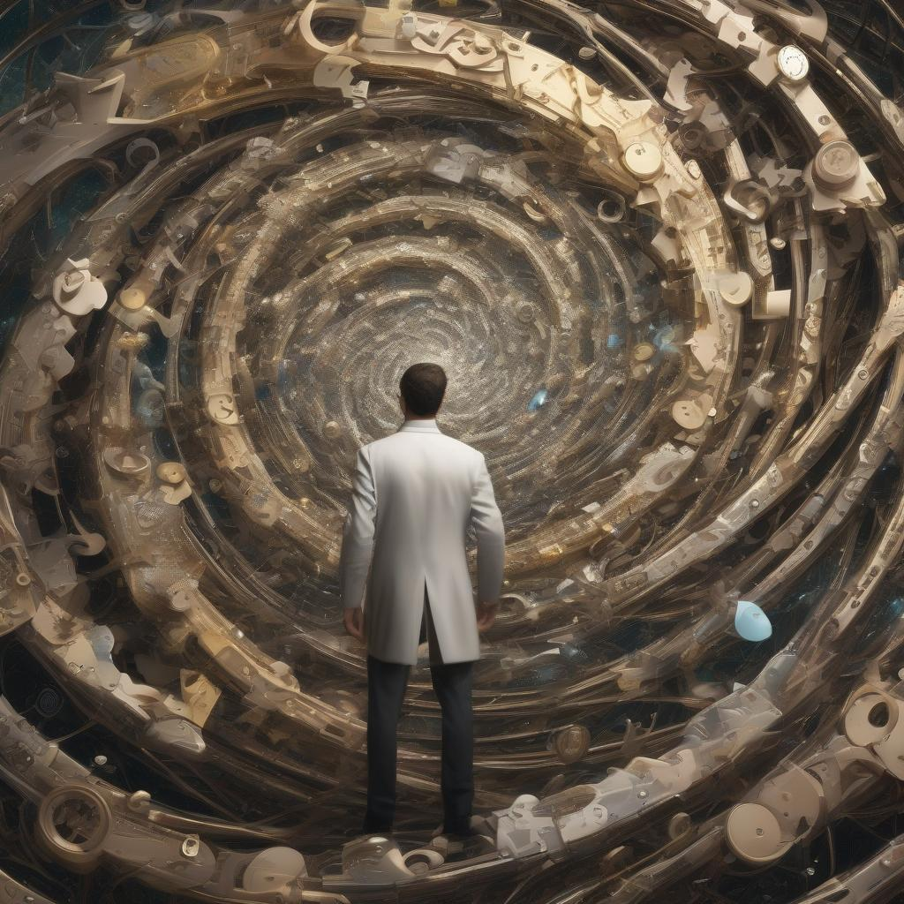
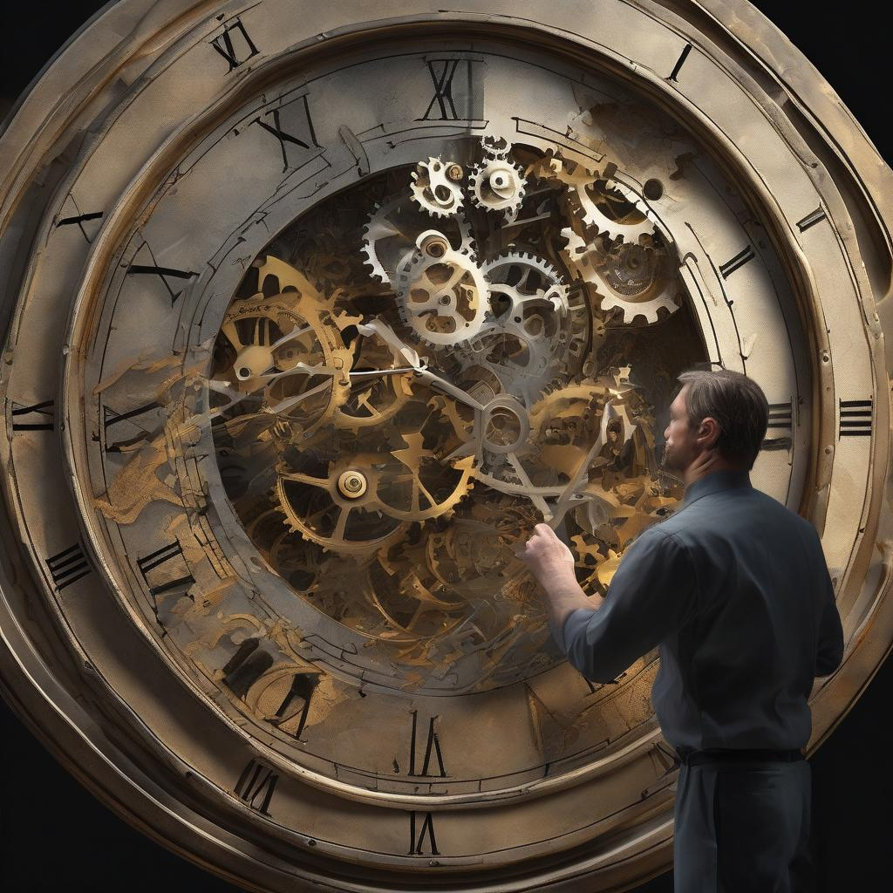

ChronoQuest: The Lost Timepieces
Act 5: The Final Puzzle

With three Timepieces in your possession, you are transported to the Temporal Nexus—the heart of time itself. Here, all eras converge, forming a swirling, chaotic vortex of past, present, and future. The final Timepiece is the keystone that will restore balance to the timeline, but it has fractured, its pieces scattered across the Nexus.
To restore time, you must assemble the Timepieces in the correct sequence. The puzzle before you is not just one of space, but of time itself. As you place each Timepiece in its rightful place on the mystical clock, reality begins to stabilize. The gears of time creak back into motion, slowly bringing balance to the fractured timeline.
